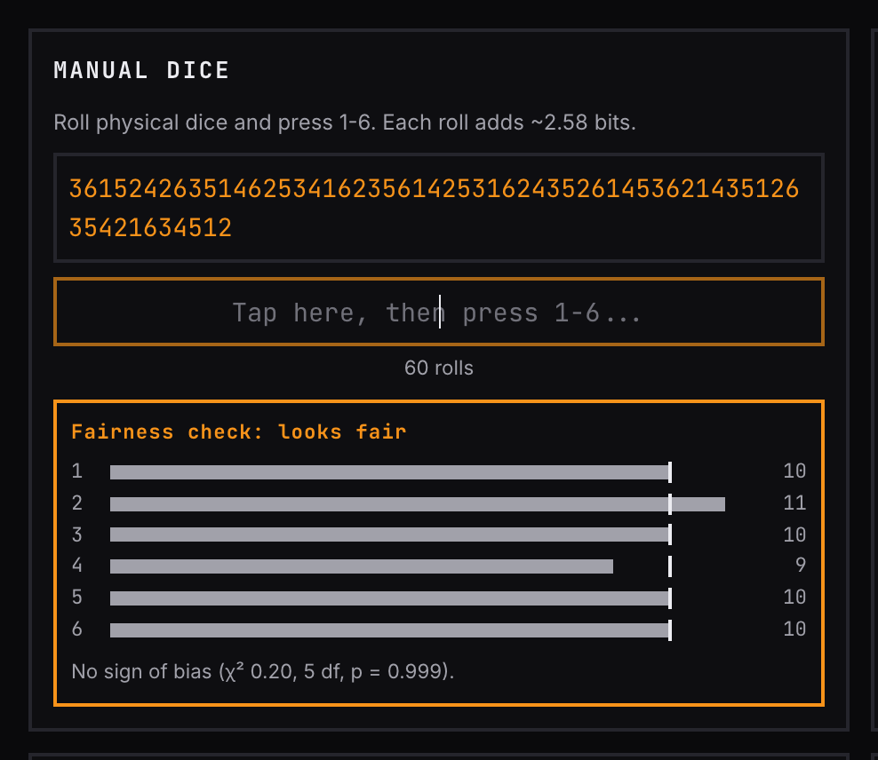
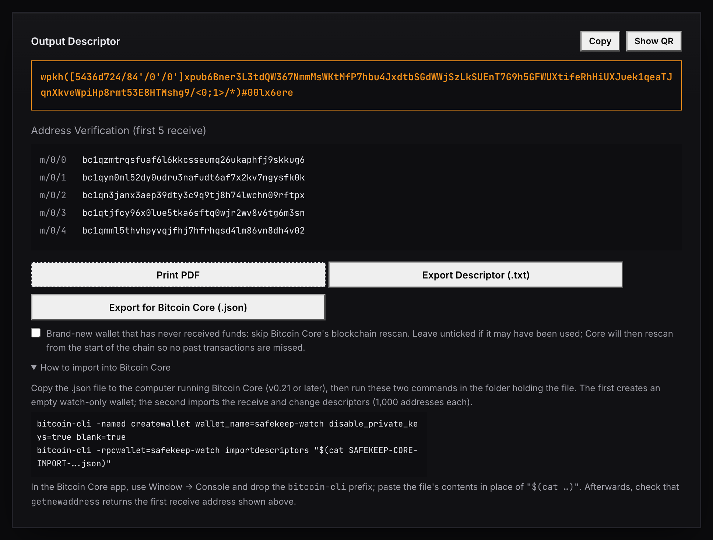
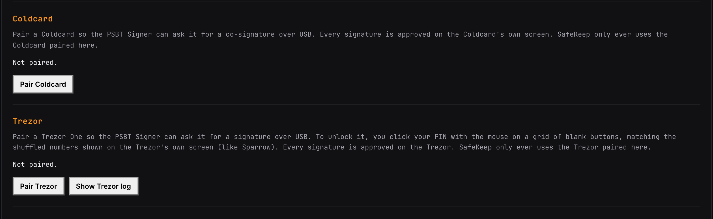
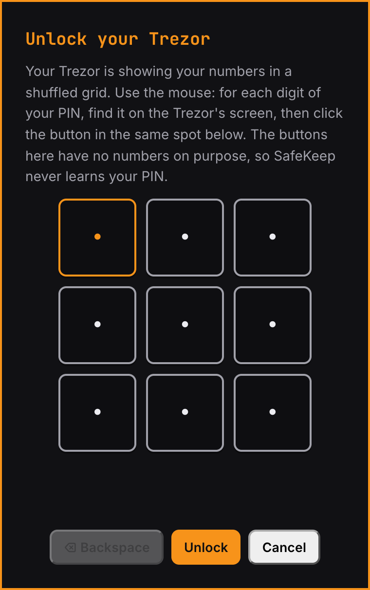
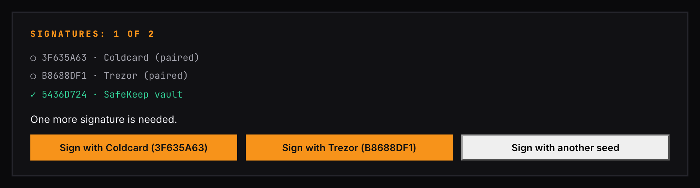
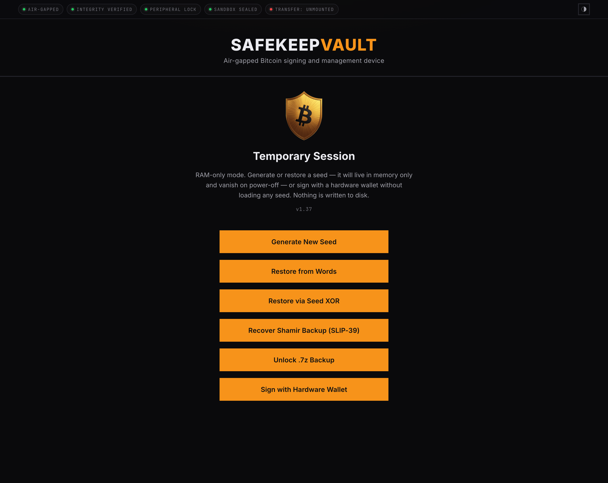

Documentation
Getting Started
Everything you need to go from a blank USB flash drive to signing your first transaction, start to finish.
Critical Precautions: Read Before Proceeding
Your 12- or 24-word seed phrase is the only unconditional backup of your private key.
Physical Backups are Mandatory — Write your seed phrase and BIP-39 passphrase onto physical media and store them in separate, secure locations. Never store these records digitally. If your flash drive fails, is lost, or is wiped, your physical backup is the only path to recovering your Bitcoin.
The Passphrase is Integral — A BIP-39 passphrase is not just a password; it is a permanent extension of your seed phrase. Without it, your seed phrase alone cannot recover your funds. Treat the passphrase with the same level of security as the seed phrase itself.
Active Development Notice — SafeKeepVault is currently in active development. We strongly recommend beginning with a nominal balance while you familiarize yourself with the tools. Ensure your physical backups are verified and current before securing significant funds.
System Requirements & Components
SafeKeepVault creates a secure, offline environment without you needing to take your computer apart or buy extra gear. The moment it starts up, it automatically disables all outside connections—like Ethernet, Wi-Fi and storage devices—to keep your data completely isolated.
System Requirements
- A Boot Drive — A standard USB flash drive flashed with the SafeKeepVault image. Once you boot your computer from this drive, the system runs in total isolation. Your internal storage remains unmounted and entirely untouched throughout the session.
- A Host Computer — Any x86-based laptop or desktop with at least 4GB of RAM. SafeKeepVault is built to run on a wide range of hardware regardless of age — the x86 computer you already own is very likely compatible. Note - Apple Silicon Macs are not supported due to their unique architecture and secure boot process.
- Webcam — While not strictly required, an integrated or USB-connected webcam is highly recommended. This enables the use of the Courier Tool, our high-density QR transfer tool, allowing you to sign transactions and verify data without ever physically connecting the vault to another device.
- A Password Manager — Strongly recommended for generating and storing the high-entropy password that protects your encrypted vault partition. A password manager lets you use a truly unbreakable credential without the risk of forgetting it, and pairs seamlessly with the QR unlock workflow described in Step 1 below.
Components
-
The Transfer Drive —
The USB flash drive creates a dedicated partition for moving data in and out of the
vault. This is the only point of contact between SafeKeepVault
and external storage. When combined with the Courier Tool—our high-density
QR tool—this creates a secure, bidirectional data flow.
- Seamless QR Unlocking: By storing your vault password in a manager on your mobile device, you can generate a QR code from that password (see Step 1). Simply display your phone to the host’s webcam to unlock your encrypted vault instantly—combining elite cryptographic strength with a streamlined, convenient way to unlock your wallet.
- Port Security: About 30 seconds after boot, the vault blocks any new keyboard or mouse that is plugged in, to defend against “BadUSB” devices that pretend to be a keyboard and type commands. Other USB storage is never mounted. The only exceptions are a Coldcard or Trezor One used for co-signing, which can be plugged in at any time and can never act as a keyboard or mouse. File-based transfers should be managed by moving the drive between machines while the vault is powered down.
Step 1: Vault Password & QR Generation
Before you boot SafeKeepVault for the first time, you need a vault password ready to go. This password will encrypt the persistent partition of your flash drive—the storage layer where your keys and vault data live between sessions. It is the primary cryptographic barrier protecting everything inside the vault.
Your Password is the Primary Defense
The strength of your vault password is the single most critical security decision you will make during setup. If an unauthorized party gains physical access to your drive, this password is the only barrier protecting your keys. There is no “forgot password” reset and no remote wipe. The password is the absolute lock.
Generate a High-Entropy Password
Open your password manager and generate a new credential for SafeKeepVault. Use a fully random string of at least 20 characters. Do not use a memorable phrase or a password you have used anywhere else. Human-chosen passwords follow predictable patterns that modern brute-force tools can exploit. A randomly generated credential cannot be guessed — only lost. Your password manager is its permanent home; do not write it down in plaintext anywhere.
Generate Your Unlock QR Code
Typing a 20+ character random password on every boot is impractical. Instead, convert it to a QR code using the widget below. Save the QR image to your phone’s secure photo library or an encrypted note in your password manager. On every subsequent boot, simply hold your phone up to the vault’s webcam — the system reads the QR and unlocks the vault instantly, with no typing required. This converter runs entirely in your browser — safekeepbitcoin.com does not store your password.
Step 2: Download & Image Creation
Download the Software —
Visit the Download page to obtain the latest release.
The software is provided as a .zip archive; once extracted, you will
find the .img disk image required for the installation.
Flash to USB — To write the image to your flash drive, we recommend using BalenaEtcher, which is available for Windows, macOS, and Linux.
- Open BalenaEtcher and select the extracted
.imgfile. - Select your target flash drive.
- Click Flash to begin the process.
While BalenaEtcher provides the most straightforward experience across all platforms,
advanced users may also utilize the dd utility on macOS/Linux or
Rufus on Windows.
Verify the Release — A developer signature is provided to verify software integrity and authenticity. Our Verification Guide contains the public keys and checksums required to validate the release across Windows, macOS, and Linux.
Step 3: Initialization & Encryption
Insert the USB flash drive, then power on or restart your computer. During startup, most systems allow you to choose a temporary boot device by pressing a function key such as F2, F8, F9, ESC, etc. immediately after powering on. On Macs with Intel processors, hold the Option key during startup. SafeKeepVault skips the usual desktop screen, booting straight into a clean, secure space built only for running the software.
Before anything else, the vault runs a start-up self-check: it feeds published Bitcoin test vectors (seed words, key derivation, addresses for every wallet type, and test signatures) through the same code it will use for your keys. If this computer gives a single wrong answer, the vault stops with the message “SafeKeep stopped: start-up self-check failed” and lists the failed checks. Don’t use that session: power off, and boot again from a freshly verified drive or on different hardware.
One-Time Configuration: The Encrypted Vault
Upon your initial boot, SafeKeepVault will guide you through the creation of your Encrypted Storage Partition. This persistent volume is where your keys and vault data reside between sessions. When prompted to set your vault password, select the scan QR option and display the QR code you saved in Step 1 to the webcam. The scanner will read it instantly and use it to encrypt the partition. Every subsequent boot works the same way — just scan and you’re in.
Alternatively, at the decryption prompt you may choose to bypass the encrypted vault entirely and boot into a Temporary Session. This launches a volatile session without writing any data to the physical drive. Manually enter your seed, perform the necessary operations, and shut down to purge all traces instantly. This mode is ideal for users who prefer to keep their keys exclusively on physical media and need no persistent storage on the drive.
Initial Configuration Options
Once the vault is initialized, you are presented with five methods to manage your seed phrase. In a Temporary Session, a sixth option, Sign with Hardware Wallet, also appears.

- Generate New Seed — Access the Entropy Generator, SafeKeepVault's seed generator. Generate a seed from the device’s random number generator in one click, or add your own randomness: dice rolls, a shuffled deck of cards, mouse movement and camera sensor noise. See Generating a new seed below. A mandatory verification sequence ensures your physical backup is accurate before any data is committed to the vault.
- Restore from Words — Securely import an existing 12- or 24-word recovery seed phrase. This will be stored securely within the vault and restored each time you reboot and enable the vault.
- Restore via Seed XOR — Reconstruct a seed phrase by combining multiple backup shares previously split with any Seed XOR tool. The shares are merged exclusively in memory; the individual components are never stored on the drive, maintaining the integrity of your distributed backup scheme. A share entered twice, or shares that cancel out to an empty seed, are rejected.
- Recover Shamir Backup (SLIP-39) — Utilize the Shamir Backup tool to reconstruct a seed from Shamir’s Secret Sharing (SLIP-39) shares. Simply input the required number of shares to meet your designated threshold, and your seed phrase will be restored into the vault.
- Unlock .7z Backup — Import a previously encrypted vault archive created using the Encrypted Backup tool. This restores your entire environment—including all stored keys, passphrases, and custom configurations—onto a new or freshly flashed boot drive.
- Sign with Hardware Wallet (Temporary Session only) — Co-sign a multisig transaction with a connected Coldcard or Trezor One without loading any seed into the vault. See Signing with only a hardware wallet.
Generating a new seed
Generate Secure Seed creates a seed from the device’s secure random number generator in one click, and is the right choice for most people. To add your own randomness, open Advanced: Provide Manual Physical Entropy and choose a mode:
- Mixed (recommended) — your dice, cards, mouse and camera input is hashed and mixed with the device’s random number generator. The seed is safe if either one is good, but it can’t be reproduced on another device.
- Verifiable Dice — physical dice only, with nothing else mixed in. The seed is the SHA-256 of your rolls, the same method SeedSigner and COLDCARD use, so you can check it on one of them. Roll exactly 50 times for 12 words or 99 times for 24 words, then enter the same rolls in the same order on the other device: the words must match exactly. Security depends entirely on your dice, so use a fair die and never let anyone see or record the rolls.
In Mixed mode you can combine any of these sources:
- Manual dice — press 1–6 for each roll (about 2.58 bits each). Backspace undoes a typo. A fairness check warns if the die looks biased.
- Playing cards — shuffle a 52-card deck thoroughly (at least 7 riffle shuffles), then enter the cards from the top: rank (A, 2–9, T or 0, J, Q, K), then suit (S, H, D, C). A full deck adds about 225 bits. A card already entered is refused, Backspace undoes the last card, and Reshuffle & Start a New Deck begins again.
- Mouse movement — 0.5 bits per sample.
- Camera noise — 4 bits per frame, taken only from the sensor-noise bits, and only when they change between frames.
The meter counts only the randomness you add (“bits from you”). The device’s random number generator is always mixed in as well, but isn’t counted.

Once a seed is loaded, the vault shows a Seed Nickname in the status bar: three words calculated from your seed phrase. The same seed always shows the same three words, on any drive, so you can tell at a glance which seed is loaded. It is a convenience label only. It does not prove that the drive is genuine, and a BIP-39 passphrase does not change it.
Next to every master fingerprint (on the Dashboard, in the tool sidebar and in the PSBT Signer), the vault draws a small coloured LifeHash pattern made from that fingerprint. It is the same picture Sparrow Wallet shows for the same wallet, so you can tell at a glance that your watch wallet and the vault hold the same key. Always confirm the fingerprint itself too: the picture is a quick check, not a replacement.
Step 4: The Transfer Drive
The Transfer Drive is the dedicated partition on your flash drive used to move files in and out of the vault — signed transactions, PSBT files, encrypted backups, and exported reports all pass through here. When the flash drive is inserted into your everyday Mac or Windows computer, this partition mounts like a normal drive, giving your wallet software direct access to any files the vault has written to it — this is how sneakernet file transfer works.
No setup needed
The vault mounts the Transfer Drive automatically on every boot. There is nothing to click and no permission prompt. The status bar shows TRANSFER: MOUNTED once it is ready, and every tool can read from and write to it straight away.
Removing the drive from a live vault session is a one-way action: as a security precaution, you cannot hot-swap it back in without rebooting the vault.
Watch Wallet Creation
Your vault holds the private keys; a watch-only wallet on your everyday device holds the public keys. The watch wallet tracks your balances, generates receive addresses, and builds unsigned transactions — all without ever touching a private key. When it’s time to spend, the watch wallet hands off an unsigned PSBT to the vault for signing, then broadcasts the result.
To set up a watch wallet, you first need to export your public key or output descriptor from the vault. Open the Seed Management tool and select your desired script type (Native SegWit, Taproot, etc.), then export the extended public key. The export lands on your Transfer Drive as a file, or can be transmitted directly via QR. Transfer it to your online device and follow the setup steps for your chosen wallet below.


Blue Wallet (Mobile — iOS & Android)
Use these settings and steps for Blue Wallet. Keys are transferred directly via QR code — no file transfer required.
Single Signature
- Tap Add Wallet and choose type Bitcoin.
- Tap Import Wallet.
- Tap Scan or import a file.
- Click Show QR on SafeKeepVault and scan the QR code with your phone. Blue Wallet imports the xpub and fingerprint automatically and creates your watch wallet.
Multisig
- Tap Add Wallet and choose type Multisig Vault.
- Tap Create, then Let’s Start.
- Tap Import vault key 1 → Scan or import a file.
- Scan the first key QR from SafeKeepVault.
- Repeat steps 3–4 for each additional co-signer key.
- Tap Create to finalize the multisig vault.
Nunchuk (Mobile — iOS & Android)
Use these settings and steps for Nunchuk. This workflow is file-based — use the Courier Tool to transmit the JSON file from the vault to your phone.
Single Signature
- In SafeKeepVault, open Seed Management, configure the settings above, and click Download JSON. The file saves to your Transfer Drive.
- Open the Transfer Hub in the vault and locate the JSON file you just downloaded.
- On your phone, open the Courier Tool and select Receive, then tap Open camera and scan.
- On SafeKeepVault, select the JSON file and click Transmit →Courier Tool→Start Transmission. The vault displays an animated QR sequence.
- Hold your phone to the vault’s screen. The Courier Tool will scan and reconstruct the file. Save it to your phone when prompted.
- In Nunchuk, tap Add Key → Coldcard → Add COLDCARD via file (advanced) → Continue.
- Navigate to the JSON file you transferred and select it.
- Name your key and tap Add Key. Your signing key is now registered.
- Return to the Nunchuk home screen and tap + to add a wallet.
- Select Custom Wallet, name it, choose the address type you used in step 1, and tap Continue.
- Select the key you created in step 8, tap Continue, then Create Wallet.
Multisig
- Follow the same key creation steps as Single Signature above, selecting Multi-Sig (BIP-48) as the Wallet Type in SafeKeepVault. Repeat for each co-signer key.
- In Nunchuk, tap + and select Group Wallet.
- Select the appropriate co-signer keys you created, configure the signing threshold (e.g., 2-of-3), and tap Create Wallet.
Sparrow (Desktop — Windows, macOS, Linux)
Use these settings and steps for Sparrow. This workflow is file-based — use the Courier Tool to transmit the JSON file from the vault to your phone, then share it to your computer via a cloud service, or move the flash drive directly to your online machine (sneakernet).
Single Signature
- In SafeKeepVault, open Seed Management, configure the settings above, and click Download JSON. The file saves to your Transfer Drive.
- Transfer the JSON file to your online computer using sneakernet or the phone → cloud method described above.
- Open Sparrow and go to File → Open Wallet.
- Navigate to and select the JSON file you transferred. Sparrow reads the key data and populates the wallet configuration automatically.
- Click Create Wallet to save.
- Sparrow will sync and display your balance and transaction history.
Multisig
- In SafeKeepVault, open Seed Management, configure the settings above, and click Download JSON. Repeat for each co-signer key. Transfer all files to your online computer using sneakernet or the phone → cloud method described above.
- Open Sparrow and go to File → New Wallet. Give your wallet a name.
- Select Multi Signature and configure your cosigner quorum (e.g., 2-of-3).
- For the first keystore, click xPub / Watch Only Wallet, then click Import → Airgapped Hardware Wallet → Import File → Coldcard Multisig. Navigate to and select the first key file.
- Repeat step 4 for each remaining keystore, selecting the corresponding key file each time.
- Once all keys are loaded, click Apply to complete the wallet.
Specter Desktop (Desktop — Windows, macOS, Linux)
Use these settings and steps for Specter Desktop. This workflow is file-based — use the Courier Tool to transmit the JSON file from the vault to your phone, then share it to your computer via a cloud service, or move the flash drive directly to your online machine (sneakernet).
Single Signature
- In SafeKeepVault, open Seed Management, configure the settings above, and click Download JSON. The file saves to your Transfer Drive.
- Transfer the JSON file to your online computer using sneakernet or the phone → cloud method described above.
- Open Specter Desktop and click Add Device.
- Select device type Other, then click Upload from SD to import your xpub. Navigate to and select the JSON file, then click Continue.
- Specter confirms the device has been added. Click Create Single Key Wallet.
- Give your wallet a name and click Continue to complete setup.
Multisig
- Follow the same key creation steps as Single Signature above, selecting Multi-Sig (BIP-48) as the Wallet Type in SafeKeepVault. Repeat for each co-signer key
- Click Add Wallet and select Multiple Signature.
- Select the devices you want in your multisig quorum and click Continue. Give your wallet a name and click Create Wallet to complete setup.
Electrum (Desktop — Windows, macOS, Linux)
Use these settings and steps for Electrum. This workflow is file-based — use the Courier Tool to transmit the JSON file from the vault to your phone, then share it to your computer via a cloud service, or move the flash drive directly to your online machine (sneakernet).
Single Signature
- In SafeKeepVault, open Seed Management, configure the settings above, and click Download JSON. The file saves to your Transfer Drive.
- Transfer the file to your online machine and open Electrum.
- Go to File → Open and select the exported JSON file. Electrum will load it as a watch-only wallet. Electrum will identify the JSON as a Coldcard and ask you to connect it — click No.
Multisig
Multisig with Electrum is not currently supported. In the meantime, you can set up your multisig wallet in Sparrow or Specter Desktop using the instructions above.
Bitcoin Core (Desktop — your own node, v0.21 or later)
If you run your own Bitcoin Core node, you can import the wallet into it as a watch-only descriptor wallet. This works for single-signature and multisig wallets, and uses the Output Descriptor tool rather than Seed Management.
- In SafeKeepVault, open Output Descriptor (under Advanced Tools → Keys & Seeds) and build the descriptor for your wallet.
- If this is a brand-new wallet that has never received funds, tick the box to skip Bitcoin Core’s blockchain rescan. Otherwise leave it unticked, so Core scans from the start of the chain and finds every past transaction.
- Click Export for Bitcoin Core (.json), follow the on-screen message to copy the file to your Transfer Drive, and move it to the computer running Bitcoin Core.
- In the folder holding the file, create an empty watch-only wallet, then import the file. The vault shows both commands with the exact file name; they look like this:
bitcoin-cli -named createwallet wallet_name=safekeep-watch disable_private_keys=true blank=true bitcoin-cli -rpcwallet=safekeep-watch importdescriptors "$(cat SAFEKEEP-CORE-IMPORT-….json)"
In the Bitcoin Core app, use Window → Console, leave out thebitcoin-cliprefix, and paste the file’s contents in place of"$(cat …)". - Check that
getnewaddressreturns the same first receive address the vault shows.

The export imports receive and change addresses (1,000 of each) and never contains private keys. Silent Payment descriptors can’t be imported this way.
Signing a Transaction
Once your watch wallet has built a transaction and exported it as a PSBT, bring it into SafeKeepVault to sign. The vault reviews the details — you inspect and verify the destination address and amount before signing is unlocked. The signed result is then returned to your watch wallet to broadcast.
Loading the PSBT
From the Dashboard, click PSBT Signer to open the tool. You are given two options for loading the unsigned transaction:
scan a QR code displayed by your watch wallet, or load a .psbt file
directly from the Transfer Drive.


If you select Load PSBT from Transfer Drive, the vault lists every
.psbt file currently on the partition. Click the file to load it.

.psbt files. Select the unsigned transaction to proceed.Reviewing the Transaction
Display the QR code generated by your wallet software and hold it up to SafeKeepVault’s webcam. Once scanned, the vault moves to the Review tab and presents a full transaction audit — every destination address displayed in full, the amount in BTC and satoshis, a generated QR of the address for independent verification on a second device, and the mining fee and fee rate.
Check the box confirming you have independently verified the destination address and amount. The Sign Transaction button remains locked until this confirmation is complete.
The vault also checks what kind of signature the transaction asks for. It only ever
signs with the standard type that covers the whole transaction (SIGHASH_ALL).
A transaction can ask for other types that leave some inputs or outputs uncovered, so
whoever holds the signature could change where the funds go. If any input asks for one,
signing is blocked with an explanation, and Force Sign cannot override it.
Create the transaction again in your wallet with the default signature type.

Signing
Click Sign Transaction. The vault signs with your master seed, or with a temporary seed you entered or scanned for this transaction only. If the wallet uses a BIP-39 passphrase, type it in or load it from the Library first: a passphrase changes the wallet’s fingerprint, so the vault cannot sign for that wallet without it. A temporary seed is never saved to disk and is cleared from memory after signing or when you leave the tool.
Co-signing with a Coldcard or Trezor
In a multisig wallet, SafeKeepVault can ask a connected Coldcard or Trezor One for its signature over USB, so you can collect two signatures in one sitting without passing files back and forth. Every signature is still approved on the hardware wallet’s own screen.
- Pair the device (once) — On the Dashboard, open Device Options and click Pair Coldcard or Pair Trezor. The vault only ever talks to the device paired here. To unlock a Trezor, click your PIN on a grid of blank buttons, matching the shuffled numbers shown on the Trezor’s screen.
- Sign with the vault — Load, review and sign the transaction as described above.
- Add the hardware signature — On the export screen, the co-signing card shows how many signatures the transaction has and which keys are still missing. Click Sign with Coldcard or Sign with Trezor and approve the transaction on the device. The export QR and files update to include the new signature. You can also add a signature from another seed you hold by entering it as a temporary seed.



Trezor needs full previous transactions
A Trezor One must see the full previous transaction for every coin being spent. Wallets often leave these out of QR codes to keep them short. If they are missing, the Sign with Trezor button is disabled and explains why: in your wallet, save the transaction as a file and load that file from the Transfer Drive instead of scanning it. A Coldcard can sign either way.
Signing with only a hardware wallet
For a multisig wallet, you can also use SafeKeepVault as a large-screen, air-gapped review station for your hardware wallets without loading any seed at all. Boot into a Temporary Session and choose Sign with Hardware Wallet. Load and review the PSBT as usual; the review lists the keys in the transaction instead of seed options. Click Continue to Hardware Signing, then Sign with Coldcard or Sign with Trezor. The vault checks that the device holds one of the transaction’s keys before pairing it for this session. To add more signatures, unplug the device, plug in the next one and repeat. Hardware-only signing works with multisig (m-of-n) transactions; sign a single-signature transaction in your wallet software with the hardware wallet instead.

Exporting the Result
Once signed, the Export tab offers several ways to return the result
to your watch wallet. The primary method is a QR code — choose the format that
matches your coordinator: Standard Base64 for Sparrow and Blue Wallet, UR
(ur:crypto-psbt, an animated QR that many mobile wallets prefer), Nunchuk
Raw Hex, or Electrum Raw Hex. Large PSBTs (over about 1,200 bytes) start on UR
automatically, because they no longer fit cleanly in a single QR code. You can also copy
or save the raw transaction hex for direct broadcast, or save the signed
.psbt file back to the Transfer Drive for sneakernet handoff.


Exporting via the Transfer Hub
If your workflow is file-based rather than QR-based, the Transfer Hub is where you
retrieve the signed .psbt file after signing. Open the Transfer Hub
from the Dashboard, locate the signed file on the partition, and use the
Transmit button to send it via animated QR to the Courier Tool on
your phone, or simply move the flash drive to your online machine and collect the file
directly from the Transfer partition. Files transmitted via QR can be received
directly on your computer at courier.safekeepbitcoin.com.

.psbt file and transmit it via QR or collect it via sneakernet to complete the workflow.Locking & Device Options
- Lock Vault — Click the seed fingerprint badge at the top of the Dashboard to lock. Locking is a real lock, not just a screen cover: the app closes, your keys are cleared from memory, the encrypted partition is closed, and the vault returns to the password prompt. Locking never powers the machine off. Scan your QR or type your password to continue.
- Auto-Lock & Display Sleep — In Device Options, set how many idle minutes pass before the vault locks itself or the screen goes dark. Set either to 0 to turn it off.
- Return to Master Vault — From a Temporary Session, open Device Options and click Return to Master Vault to wipe the temporary seed from memory and go straight to the unlock prompt for your encrypted vault, with no reboot. You can also load a different temporary seed in place.
- Settings that stick — Theme, display scale, sound and the idle timers are saved in your encrypted vault and restored on every boot. Temporary Sessions never read or save them.
The Tool Arsenal
Beyond the core signing workflow, SafeKeepVault includes a broad suite of tools covering the full range of Bitcoin self-custody tasks — from seed generation and address verification to backup management, multisig coordination, and inheritance planning. Every tool runs completely offline and works with any Bitcoin wallet that supports standard formats.
Main Tools
- PSBT Signer — Reviews, decodes, and signs PSBTs entirely offline. Transaction details are displayed for inspection before you sign. Can also ask a paired Coldcard or Trezor One for a co-signature over USB.
- Seed Management — Exports your public key and output descriptor for watch-only wallet setup in Sparrow, Electrum, Nunchuk, Blue Wallet, Specter, or any compatible coordinator. Your private keys never leave.
- Transfer Hub — File browser for the Transfer Drive. View, rename, or delete backup archives, transactions, and PDFs, or transmit a file to your phone as an animated QR.
Advanced Tools
The thirteen advanced tools are grouped on the Dashboard by what they do.
Keys & Seeds
- Entropy Generator — Generates your master seed from the system’s random number generator, mixed with any randomness you add: dice rolls, a shuffled deck of cards, mouse movement and camera noise. Verifiable Dice mode makes a seed you can check on SeedSigner or COLDCARD. A live fairness check scores your physical dice rolls and, after 30 rolls, warns if the die looks biased. See Generating a new seed.
- BIP-85 Child Seeds — Generates separate child wallets from your master seed — isolated wallets for different purposes, all recoverable from one backup.
- Seed QR Code — Displays your seed as a SeedQR for steel stamping or paper backup, in Compact (the default) or Standard format. SafeKeepVault, SeedSigner, Jade, Krux, Passport and Sparrow read both; BlueWallet and most phone wallets read only Standard. A Standard code’s digits can be read by any phone camera, so keep it as private as the seed words. Hand-drawn or engraved copies can be verified by scanning them back in, and blank grids matching the code’s size are available for printing.
- Passphrase Library — Manages BIP-39 passphrases (the “25th word”) inside the encrypted vault. Loads directly into the PSBT Signer and other tools when you need a passphrase-protected wallet. Generate opens a generator right under the passphrase field; changing the separator or capitalization keeps the same words. A generated passphrase doesn’t need re-typing: write it down (or print it), then type it back from your copy to unlock Save. Use this wallet now switches straight to the passphrase wallet. A printed backup always shows the fingerprint of the passphrase on it. If you printed a passphrase backup before v1.37 while another passphrase wallet was active, print it again: its fingerprint may be wrong.
- Output Descriptor — Builds wallet configurations for single-signature, multisig and Silent Payment setups. Export and import directly into any compatible wallet, or export a watch-only import file for Bitcoin Core.
Backup & Recovery
- Seed XOR Splitter — Splits your seed into XOR shares for distributed cold storage. Reconstructs your master seed by combining these shares: merging shows the recovered fingerprint to compare with your share cards, and rejects a share entered twice or shares that cancel out to an empty seed.
- Shamir Backup — Splits your seed into Shamir (SLIP-39) shares for distributed backup. Recovery requires only a portion of the shares (2-of-3, 3-of-5, etc.) to restore. Recover these shares with SafeKeepVault: restoring them on a Trezor opens a different, empty wallet.
- Encrypted Backup — Exports a fully encrypted backup of your vault to the transfer drive. Everything inside is sealed — file names included — until the correct password is entered.
- Wallet Record — Generates a clean, single-page PDF summary of your wallet for long-term offline storage and inheritance planning. Start with Use the wallet I just built (from the Output Descriptor tool), or paste or scan the descriptor exported by any wallet app (animated QR codes work). The vault checks the descriptor’s checksum, refuses one containing private keys, and works out the wallet type, M-of-N, script, keys and first receiving address. Then add a title and purpose, give each key a plain-language name (“Dave’s Coldcard — home safe”), and mark which keys need a passphrase. Nothing you type is saved in the browser. If you printed a record for a nested SegWit or legacy multisig wallet before v1.37, print it again: earlier versions recorded these as single-signature.
Signing & Transfer
- Message Signer — BIP-322 message signing. Proves address ownership with a verifiable proof without moving any coins.
- Courier Tool — Transfers files between air-gapped devices via animated QR codes. No USB, no network — light and a camera lens only.
Private Data
- Encrypted Notes — Encrypted notes stored inside the vault. Keep recovery instructions, multisig details, and setup notes sealed within the vault. For your eyes only.
-
2FA Backup —
Backs up your authenticator (TOTP) secrets inside the encrypted vault. Scan the export QR
from Google Authenticator, or individual
otpauth://codes, so you can restore your two-factor accounts if your phone is lost.